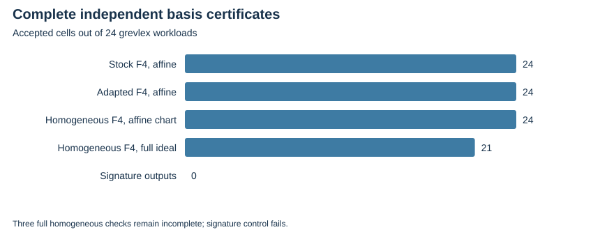

TWIST ROUTES 1–3 · E25 · 2026-10-23 · LOCAL BOUNDED EVIDENCE
The pilot requests 48 curve/arity/encoding/order cells. Twenty-four grevlex cells execute five engines; 24 lex cells are unsupported by this signature backend and retain an independent affine reference.
Stock affine F4, the output-adapted affine F4, and homogeneous F4 all return parsed bases in 24 cells. Every dehomogenized affine basis passes a complete independent leading-ideal/inclusion certificate. Homogeneous completeness passes 21 cells; three remain checker-limited.
Both signature arms fail all 24 cells and the small positive control, with signal exits and no parsed bases. The source restores the actual field before its signature core; a placeholder field diagnostic is not evidence of wrong-field computation. The local patch changes result serialization only.
Earlier parser errors and manual S-pair timeouts remain recorded. The manual checker printed all 49 summary rows, but its shell receipt tail failed; no missing successful receipt is invented. The separate leading-ideal replay has a clean receipt.
| Independent certificate | Accepted cells / 24 |
|---|---|
| dehomogenized_affine_complete_basis_gate:A0 | 24 |
| dehomogenized_affine_complete_basis_gate:H0 | 24 |
| dehomogenized_affine_complete_basis_gate:S0 | 24 |
| homogeneous_complete_basis_gate:H0 | 21 |

No timing or speed comparison is admitted. Magma/FGb/OpenF4 and an applicable successful signature reference remain missing. The historical gate key “dimension” records Singular vdim (quotient vector-space dimension), not Krull dimension.
Verified locally on the same host; complete raw publication is pending artifact-store access. No calibrated speedup, novelty, independent-host replay or NIST DLP is claimed. Original acceptance criteria remain open.
Rust 1.90.0, PARI/GP 2.17.2, one worker except the three-cell E25 orchestration; isolation L0. Caps and limits are in each source-frozen protocol and receipt. Counts are exact finite records; no wall time is admitted. Stochastic uncertainty is not inferred from repeated configurations or targets.
| Receipt / phase | UTC start | Exit | Source pin |
|---|---|---|---|
| homogeneous-20261023-leading-v4.json | 2026-10-23T16:40:53Z | 0 | cc313c23e9b1 |
| homogeneous-20261023-v1.json | 2026-10-23T16:14:25Z | 1 | 36ed6603620a |
| homogeneous-20261023-v2.json | 2026-10-23T16:16:09Z | 0 | a9035877275c |
Native assessment: ../../execution-v2/assessment-20261023-v3/ASSESSMENT.json. Raw members: runs/homogeneous-20261023-v1, -v2, -recheck-v3 and -leading-v4. Source/input/binary hashes and exact argv: E25-receipts.json and ../../execution-v2/receipts/.